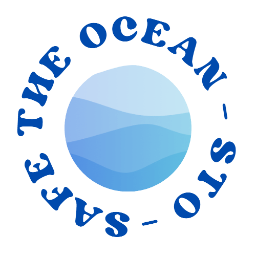

Verzuring van de oceaan
Stijging van het zeeniveau
Contact
DE IMPACT VAN DE KLIMAATVERANDERING OP ONZE OCEAAN
Er is een probleem...
Het gaat niet goed met de oceaan
En we kunnen het probleem nu nog oplossen.
Maar dan is er wel directe actie nodig.
Daar kom je achter bij het lezen van deze website.